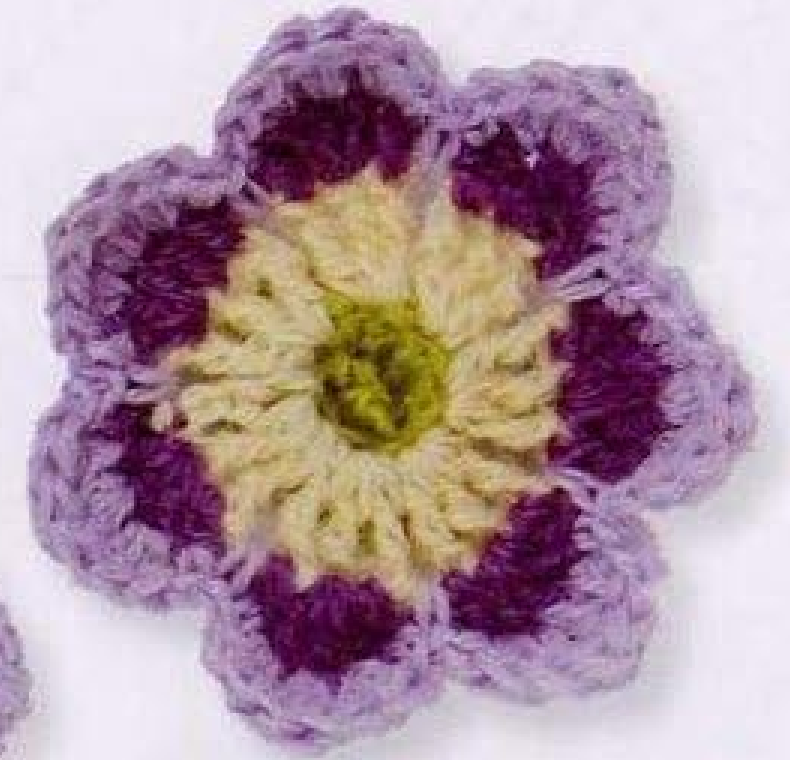
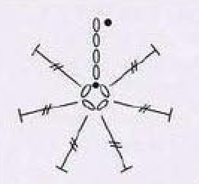
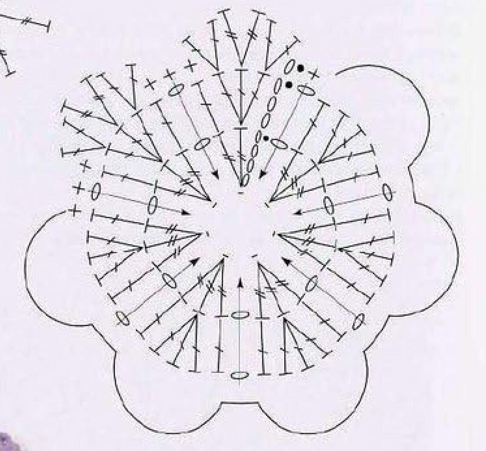
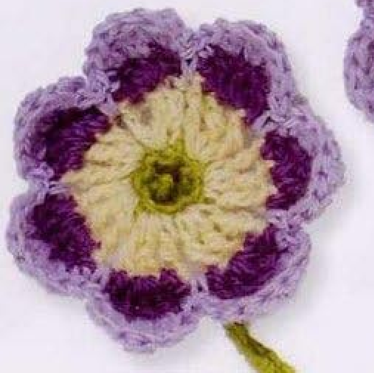
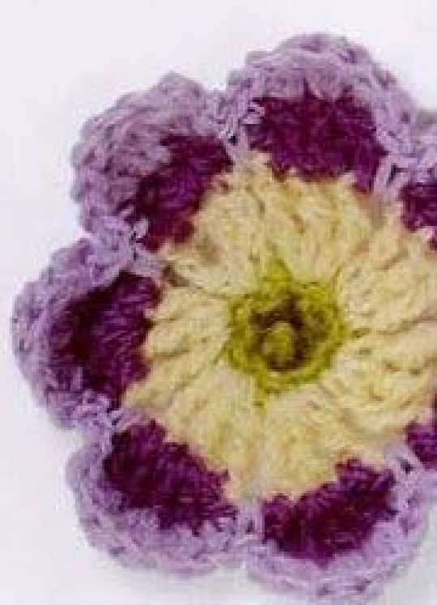
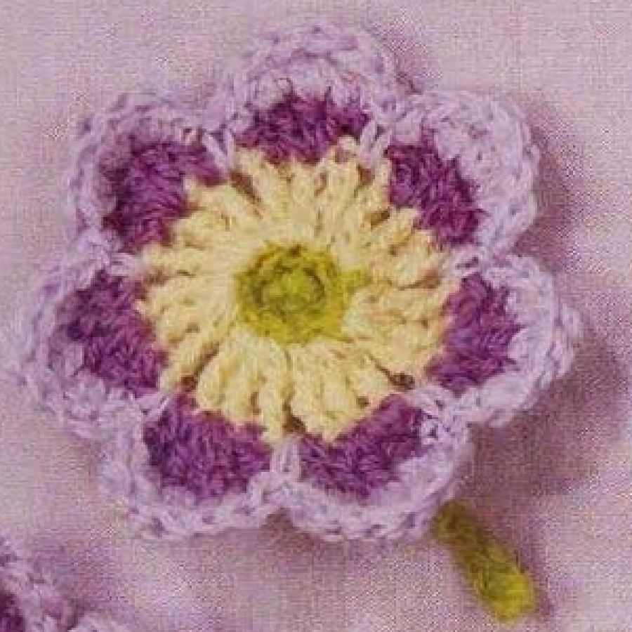

Crochet Auricula combines a lime center, a cream ring, purple scallops, and a mauve outer edge in four rounds. Seven repeated sections form the flower’s outline, with connecting singles worked around chain spaces from two earlier rounds. This guide follows pattern 59 in Lesley Stanfield’s 100 Flowers to Knit & Crochet, preserving its joins, color changes, and special connector in US crochet terms.

Key Takeaways
- Use a single strand of embroidery wool or 4-ply wool in lime A, cream B, purple C, and mauve D.
- Leave an approximately 5 cm, 2 inch, starting lime end for the center knot.
- The first round has seven counted tall positions, expanding to twenty-one in cream.
- Purple groups create seven scallops, followed by mauve edging.
- Each mauve connector catches a chain from round 3 and the corresponding chain from round 2.
- Make and attach a separate fifteen-chain lime stem.
CROCHET AURICULA FLOWER PATTERN
Project: One seven-scallop wool flower with a separate lime stem. The entry is in the book’s intermediate designs. The four-round recipe is translated into US terms. Hook, gauge, yarn quantity, and dimensions are not specified.
| Skill level | Intermediate designs in the source. Practical guidance: familiarity with tall stitches, color changes, and connectors through earlier chain spaces is helpful. |
|---|---|
| Base size | One flower with 7 scalloped sections and a stem. Measurements are not specified. |
| Yarn | A single strand of embroidery wool or 4-ply wool: lime A, cream B, purple C, mauve D. |
| Quantity, hook, gauge | Not specified. Choose a hook suited to the chosen wool and assess the center and first scallop. |
| Notions | Scissors and a blunt needle for invisible finishes, the center knot, and stem attachment. |
| US abbreviations | ch = chain; sc = single crochet; dc = double crochet; tr = treble; sl st = slip stitch; RS = right side. UK dc = US sc; UK tr = US dc; UK dtr = US tr. |
| Foundation | With A, leave an end approximately 5 cm, 2 inches, long. Ch 4 and join with a slip stitch into a ring. |
| Round 1, RS | Ch 4, work 6 tr in the ring, and sl st to the top chain of the starting ch 4. 7 counted positions. Fasten off invisibly. |
| Round 2 | With the inside of the cup facing, join B in a tr. Work ch 4 and 2 tr in that stitch below; [ch 1, 3 tr in the next stitch] 6 times. Ch 1; with C, sl st to the top chain of the starting ch 4. 21 counted tall stitches. Continue with C. |
| Round 3 | Ch 3, 3 dc in the next tr, 1 dc in the next tr; [skip the ch-1 space, ch 1, 1 dc in the next tr, 3 dc in the next tr, 1 dc in the next tr] 6 times. Ch 1; with D, sl st to the top chain of the starting ch 3. Continue with D. |
| Round 4 | Ch 1, 2 dc in the next dc, 2 tr in the next dc, 2 dc in the next dc, 1 sc in the next dc, then 1 sc around both the ch-1 space of round 3 and the corresponding ch-1 space of round 2. [1 sc in the next dc, 2 dc in the next dc, 2 tr in the next dc, 2 dc in the next dc, 1 sc in the next dc, 1 sc around both corresponding chain spaces of rounds 3 and 2] 6 times. Sl st to the starting ch 1. Fasten off invisibly. |
| Stem | With A, ch 15. Skip 1 chain and sc in each of the next 14 chains. Fasten off. |
| Making up | Hook the first A end into the flower center, knot it close to the flower, and trim. Attach the stem. |
Understand the Four Color Rounds
The lime first round forms a small center cup with seven counted positions. Cream is then joined with the inside of that cup facing, and each position expands into a group of three tall stitches. Purple works across those cream groups with a wider central group, while mauve follows the resulting scallops and connects them down to earlier chain spaces.
The construction is one continuous flower structure with color changes, not separately made purple petals sewn onto a cream disc. The first lime round is fastened off, but the cream-to-purple and purple-to-mauve changes occur at their closing slip stitches. Preserve those different color-change instructions rather than cutting every round in the same way.
A lime stem is made separately and attached after the flower. The starting lime end is retained for the small center knot described in the making-up step. That knot is not an additional lime crochet round, and the source does not add another green leaf to the motif.
Choose the Wool and Retain the Starting End
The source allows a single strand of embroidery wool or 4-ply wool. Prepare lime A, cream B, purple C, and mauve D in comparable thickness. Choosing similar wool across colors helps the cream groups and the outer scallops relate to the small central cup.
Leave the first lime end approximately five centimeters, or two inches, long as directed. This is an actual source measurement for the end, rather than a finished flower dimension. It is needed later when the end is brought into the center, knotted close to the flower, and trimmed.
No hook size, numerical gauge, yarn quantity, or finished diameter is supplied in the entry. Choose a hook suited to your wool and examine the center cup and first cream group. Keep stitch tops and chain spaces visible, because later rounds use them separately and the mauve connectors also reach into an earlier cream space.
US Terms and the Special Connector
The book’s UK double treble is US treble, beginning with two yarn overs. UK treble becomes US double, beginning with one yarn over. UK double becomes US single. These three heights define the cup, purple scallops, and mauve edge, so keep them distinct rather than replacing all tall stitches with doubles.
A US treble is completed by drawing through two loops three times after drawing up the working loop. A US double draws through two loops twice. Complete the tall stitches individually throughout this flower; the groups of two or three are shared-base increases, not clusters closed together.
The special mauve single crochet is worked around a chain from round 3 and the corresponding chain from round 2 together. The symbol key names both earlier rounds. It is not merely a single in the newest purple space. This longer connector links the scallop boundaries through the two chain layers.
Connector checkpoint: Catch the corresponding chain spaces from both rounds 3 and 2 in each mauve connecting single. Using only the purple space changes the source anchoring.
Step 1: Make the Seven-Position Lime Cup
With lime A and the retained starting end, chain four and join with a slip stitch into a ring. With the right side facing, chain four and work six US trebles into that ring. All six actual tall stitches share the ring base, rather than being distributed individually into its four chains.
Join with a slip stitch into the top chain of the opening four-chain rise. The source states seven stitches for this round: six actual trebles plus the counted rise. Making seven actual trebles would add an extra position and change every later group count.
Fasten off invisibly while preserving the first lime end for making up. Keep the little cup’s opening accessible rather than covering it with an invented center disc. The next round is worked with the inside of the cup facing, a specific orientation change given by the source.

Step 2: Expand the Center into Cream Groups
With the inside of the cup facing, join cream B in a treble position. Chain four and work two US trebles in that same stitch below. The starting rise and two actual trebles form the opening three-position group. Follow with one chain and three trebles in the next center stitch.
Repeat the bracketed one-chain-and-three-treble group six times in total after the opening group. Each of the seven center positions receives a three-position cream group. The original count is twenty-one tall stitches, including the opening counted rise. Keep one-chain gaps between the groups.
After the sixth repeated group, chain one and use purple C for the slip stitch into the top chain of the opening four-chain rise. Continue with C. This changes color at the join and closes the cream groups while retaining their seven one-chain boundaries for later rounds.
Cream checkpoint: Seven groups of three give twenty-one counted tall positions. The last one-chain gap is made before the purple closing slip stitch.
Step 3: Start the Purple Scallop Round
With C, chain three, work three US doubles in the next cream treble, and one US double in the next cream treble. The opening rise supplies the first counted position of this five-position group. The middle cream stitch receives the three-double increase, while the neighboring positions define its sides.
Skip the next cream one-chain gap, chain one, then work one double in the next treble, three doubles in the next treble, and one double in the next treble. Repeat that bracketed sequence six times in total. Each cream group of three tall positions supports one purple section of five.
Keep the new one-chain boundaries aligned with the skipped cream gaps. These paired spaces are important because the mauve edge later catches both layers at each boundary. Do not work an extra double into the skipped cream gap merely because it looks open.
Step 4: Close Purple with Mauve and Check Seven Sections
After the sixth purple repeat, chain one and use mauve D to slip stitch into the top chain of the opening three-chain rise. Continue with D. The source’s final chain belongs to the seventh boundary gap, so do not omit it before closing the round.
Count seven purple groups, each with a five-position route across its cream base. There are seven new chain gaps separating them. The first group uses the counted rise as its first position, while the later groups begin with actual doubles. Their outer placement should still follow the same seven-part outline.
Before adding the edge, identify each purple gap and the corresponding cream gap below it. Keeping those layers visible now is easier than searching for a buried cream chain after part of the mauve edge has been tightened. The full chart shows these connecting positions.

Step 5: Work the First Mauve Scallop Edge
Begin with one chain. Work two US doubles in the next purple double, two US trebles in the next, two US doubles in the next, and one US single in the next. The graduated heights raise the middle of the scallop and shorten its sides. The opening chain acts at the starting short edge position.
Then work one US single around both the one-chain space of round 3 and its corresponding one-chain space of round 2. Use the specific source symbol as a guide to this shared connector. Keep the hook around both chains rather than inserting only into an individual purple chain strand.
Draw up the loop around the paired chains and complete the single crochet. Keep the connector snug enough to define the boundary but avoid tightening it so strongly that the cream and purple layers bunch. Its role is to connect the earlier spaces while the taller mauve stitches outline the scallop above.
The Edging Connects Down Through Two Rounds
Each scallop boundary has a purple chain space above a cream chain space. The mauve single catches both together. This is why the earlier gap alignment matters: the outer edge is anchored through two layers rather than simply worked along the newest round.
Step 6: Repeat the Mauve Edge Around the Flower
For the next section, work one US single in the next purple double, two US doubles in the next, two US trebles in the next, two US doubles in the next, and one US single in the next. Follow with one single around the corresponding chain spaces from rounds 3 and 2 together.
Repeat that full bracketed section six times after the opening edge section. Keep the two-treble middle group over the middle of each purple scallop. The two-double groups sit to either side, with singles at the short boundaries. Do not shift the increase groups into the connector spaces.
Join with a slip stitch to the starting one-chain rise and fasten off invisibly. Check that all seven scallops have their mauve outline and a paired-chain connector at the boundary. Secure the ending yarn on the back without drawing it across the cream ring or lime center.
Edging checkpoint: The tallest mauve pair is two US trebles in the middle purple stitch. Each boundary connector then catches both earlier chain spaces.
Step 7: Make the Separate Lime Stem
With lime A, chain fifteen. Skip the chain nearest the hook and work US single crochet into each of the next fourteen chains. These are singles, not slip stitches. The source gives this count for the stem but does not provide a measured stem length.
Keep the return tension consistent so the small stem remains recognizable beside the flower. Count fourteen singles before fastening off. One chain is skipped and fourteen receive stitches, using the complete fifteen-chain foundation without leaving an extra unworked chain at the end.
Fasten off as the source directs. Retain enough yarn for attaching the stem during making up. The entry does not add a side branch or a leaf to this stem. Making it separately allows you to position it behind the finished flower without interrupting the mauve edging route.

Step 8: Knot the Center End and Attach the Stem
Hook the first lime A end into the center of the flower. Knot it close to the flower and trim, following the source’s making-up instruction. This is the retained approximately five-centimeter starting end, rather than a new strand added after all lime ends have been removed.
Attach the separate lime stem. Position it with the finished photograph as a guide and sew through stable stitches on the back. The entry does not give a sewing stitch count, so inspect the connection for security while keeping the lime center and cream ring clear on the front.
Check the front and back before trimming remaining ends. The seven scallops should be visible, the center knot should sit close to the flower, and the stem should emerge neatly. The source supplies no pressing temperature or blocking diameter; use wool-appropriate care for any optional extra shaping.

Troubleshoot Counts and Paired-Space Placement
The cream round does not have twenty-one positions
Review the seven-position lime cup and its counted opening rise. Each cream group has three positions, with the cream rise counting in its first group. An extra lime treble or an extra cream stitch changes the total. Correct the foundation rather than removing a later scallop to force the outline to fit.
The mauve edge pulls the flower into a bunch
Check whether each connector catches the corresponding purple and cream chain spaces rather than unrelated gaps. Also inspect tension at that shared single. Pulling a distant cream gap into the wrong purple boundary distorts the layers even when the scallop stitch heights are correct.
A scallop has the wrong middle height
The mauve middle pair uses US trebles, while its neighboring pairs use US doubles. Mixing the UK conversion can flatten that middle group. Check the two-yarn-over trebles against the chart before changing the yarn or trying to stretch the scallop into shape.

Optional Colors, Sizing, and Decorative Uses
Lime, cream, purple, and mauve are the source colors. Other shade choices are optional adaptations while retaining the four color roles and seven-part construction. Use comparable wool thickness across the rounds so the connectors and edge sit comfortably on the earlier groups.
Different yarn or hook choices can change dimensions, but the source offers no graded sizes or gauge calculation. Test a complete flower and stem before planning a particular applique area. Added use ideas include a decorative textile panel or handmade accessory, attaching through stable back stitches so the scalloped edge remains visible.
Variation guidance: Extra petals, a new leaf, a changed connector route, or a separate decorative center alter the original recipe. Keep the seven-section Auricula construction clear.
Auricula at a Glance
- Four wool colors: lime, cream, purple, and mauve.
- Seven-position lime cup expands to twenty-one cream positions.
- Seven purple sections and a graduated mauve edge.
- Mauve singles connect corresponding chain spaces from rounds 3 and 2.
- Retained lime center end and a separate fifteen-chain stem finish the motif.
Conclusion
Auricula depends on clear group counts and the special edging connection through two earlier rounds. Check each color stage, align the boundary gaps, and retain the starting lime end for the center knot. The compact card contains the complete source recipe in US terms, while the chart and symbol key show its connecting route. Click the Pin to return to the pattern when you are ready to make the flower.
Source and Tags
Source: Lesley Stanfield, 100 Flowers to Knit & Crochet, pattern 59 Auricula. Instructions, charts, special symbol, and finished flowers are on printed page 77, PDF page 71; the directory example is on printed page 28, PDF page 23. Some photographs are partly cut off at scan edges. These are finished-work images, not progress photographs. The recipe is translated into US terminology, with added practical advice identified separately.
Crochet AuriculaSeven ScallopsFour-Color FlowerWool CrochetDecorative AppliqueUS Crochet Terms